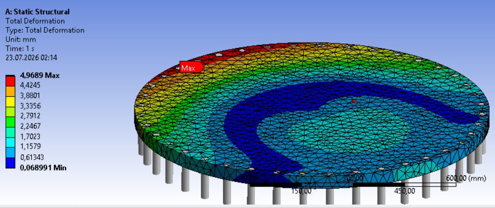
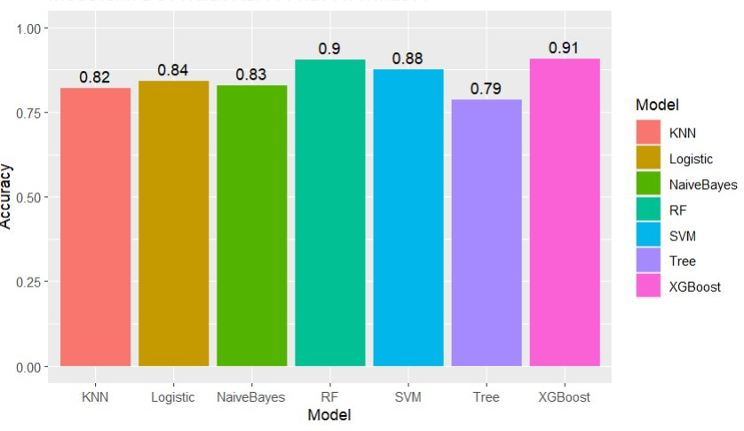
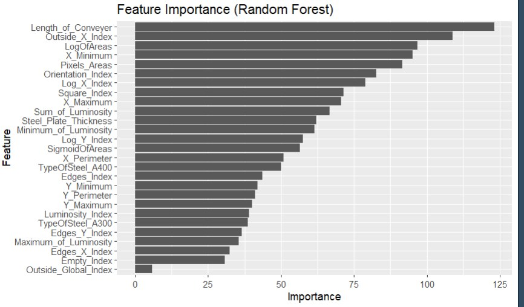
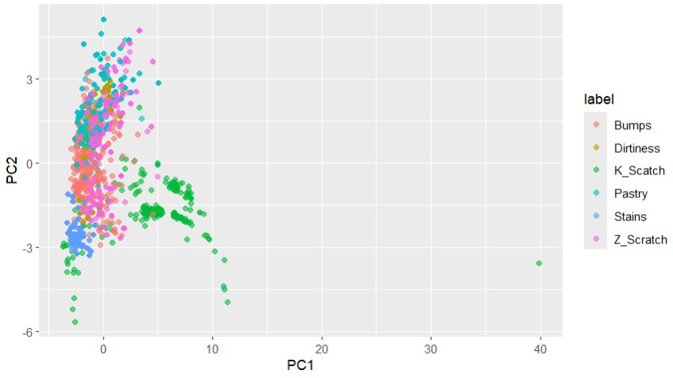
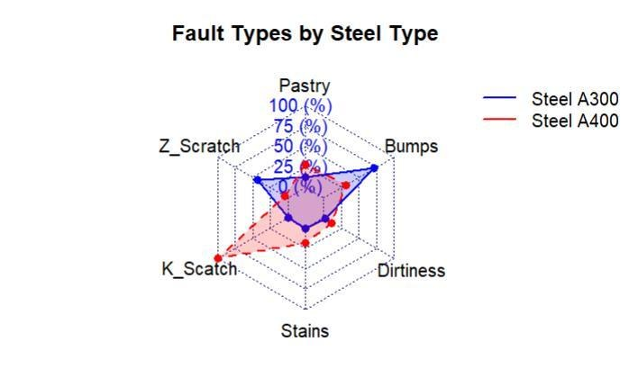

Engineering portfolio · 2026
Muhammet Mert Erdoğan
Mechanical engineer working on design, structural analysis and manufacturing. BSc Mechanical Engineering, thesis MSc in progress at Istanbul University-Cerrahpaşa. Certified SOLIDWORKS Professional (CSWP).
01 · Pressure vessel · structural analysis
Where is the design really governed?
Shell theory gave the vessel a comfortable margin. The ANSYS model of the real head and flange showed where that margin is actually lost.


01 · Pressure vessel · how I got there
Two routes, one honest comparison
Problem
Shell r = 450 mm, t = 10 mm, head 12 mm, L = 1600 mm, SA-516 Gr.70 (yield 260 MPa), internal pressure 0.597 MPa.
Approach
- Hand calculation: thin-wall shell theory for hoop, axial and von Mises stress (23.3 MPa) and radial growth (0.051 mm).
- FEA: linear static model of the vessel and its bolted head in ANSYS Mechanical 2022 R1.
- Comparison: theory describes the shell away from the ends, FEA peaks include bending at discontinuities, so I compared them at two levels.
Result
The shell is far from yield, but the head and flange govern the design with a safety factor of 3.05 (260 / 85.3 MPa peak principal stress).
Next
Mesh independence at the peak and a minimum-constraint support instead of the fixed base.


01 · Pressure vessel · burst consequence
From stress to a safety distance
A safe stress level does not say how far people should stand if the vessel ruptures. I added a consequence chain to the same vessel.

Method
- Stored energy: isentropic expansion of an ideal gas (k = 1.4).
- TNT equivalent: 4.184 MJ/kg, with 4.68 MJ/kg as the uncertainty bound.
- Distance: Hopkinson-Cranz scaling with Kinney-Graham overpressure values.
- Scenarios: 1x to 3x working pressure, yield onset and an estimated 12.3 MPa burst.
Academic pre-engineering assessment. Fragment throw was discussed qualitatively because the data to calculate it was not available.
02 · TEKNOFEST UAV · design and manufacturing
A skid landing gear that survives the landing
A 7 kg X-frame quadcopter needed a landing gear that is light, keeps the camera clear and absorbs a hard landing. I designed it.


02 · TEKNOFEST UAV · design decisions
Light, stiff and easy to replace
Design decisions
- Skid gear instead of arm-mounted legs: keeps it out of the camera's view and spreads the landing load over a larger area.
- Carbon-fibre tubes with a 5 mm wall on the legs, thicker than the arms, from a local manufacturer.
- 3D-printed T-joints and angled flanges in ABS for strength-to-weight and easy printing.
- Rubber pads on the skids to soften the landing shock.
- Bolted to the frame like the other parts, for easy assembly.
Tools
SolidWorks parametric parts, assembly and drawings. ANSYS static structural analysis of the landing gear. FDM printing in PLA, ABS and ASA.
Result
The final landing gear came in 50% below the specification weight target.


03 · Machine learning · quality
Predicting steel plate defects
A classifier that tells steel plate fault types apart from inspection measurements, so defective output can be caught and traced back to the process.



03 · Machine learning · method
From raw measurements to a voting ensemble
Data and preparation
UCI Steel Plates Faults data, 27 geometric and luminosity features per plate. The ambiguous "other faults" class was left out, the data was split 80/20 and scaled, minority classes were oversampled and Boruta selected the informative features.
Models
Logistic regression, decision tree, random forest, k-NN, naive Bayes, SVM (5-fold cross-validation for C) and XGBoost. XGBoost (91%), random forest (90%) and SVM (88%) were combined by majority vote: 91.3%, precision 0.909, recall 0.891.
What it says about the process
K-scratch and bumps are recognised well, Z-scratch is often confused. Conveyor length ranks highest, so the model leans on line and geometry measurements.


04 · More work
Formula Student and industry
İÜC Racing Formula Student · powertrain team · 2023 - 2026
Designed the chain guard in SolidWorks and verified its strength with static analysis in ANSYS. Revised the bracket design for a 15% weight reduction.
Internships
- FESTO, 2025: traced mechanical, pneumatic, electrical and software faults in a robotic system and recommissioned it.
- BEKO, manufacturing, 2025: found loss sources at 5 critical assembly stations and proposed 2 improvements.
- Midas Makina, design, 2024: revised SolidWorks models and prepared manufacturing drawings.
- Yılmaz Redüktör, workshop, 2024: machining, heat treatment and gear quality control on site.
Skills
SolidWorks (CSWP), ANSYS Mechanical, AutoCAD, Siemens NX, CATIA, Fusion 360, MATLAB/Simulink, R, MS Excel.
Static and modal FEA, topology optimisation, technical drawing and GD&T, design for manufacturability, design for injection moulding, sheet metal design, root cause analysis, lean manufacturing.
Contact
mmert1erdogan@gmail.com
linkedin.com/in/mmerterdogan
mmerterdogan.github.io